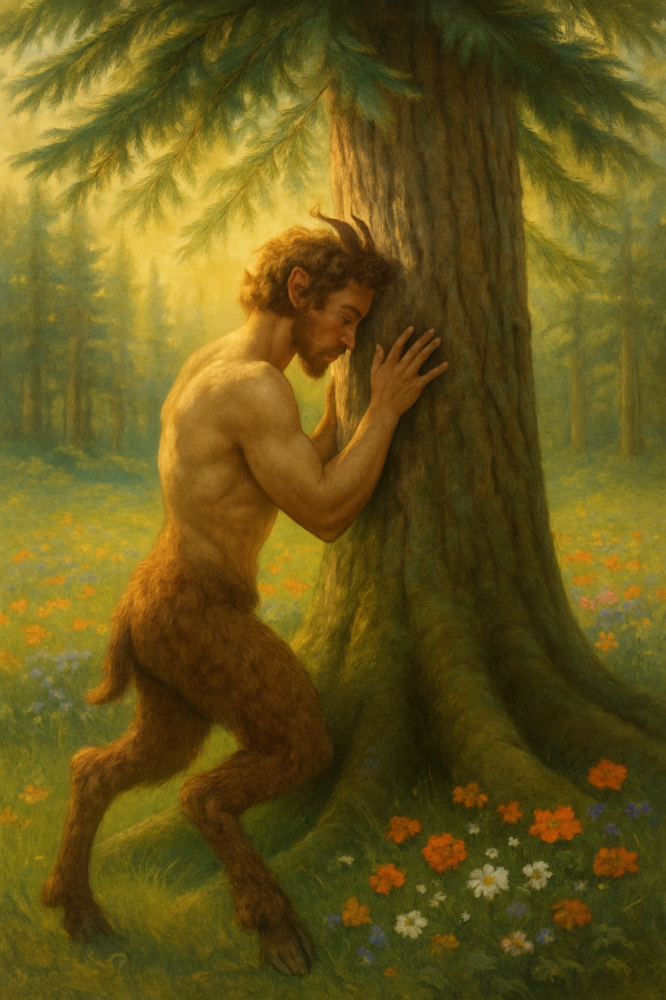

Home
Rituelen en Levensstijl
Muziek
Beweging en Gezondheid
In de Keuken
Kinderen en innerlijk kind
Op reis
Samenleven met de Aarde
Over mij
Contact
Donaties

Welkom op de pagina Over mij. Deze ruimte is nog in opbouw en zal zich binnenkort verder ontvouwen.